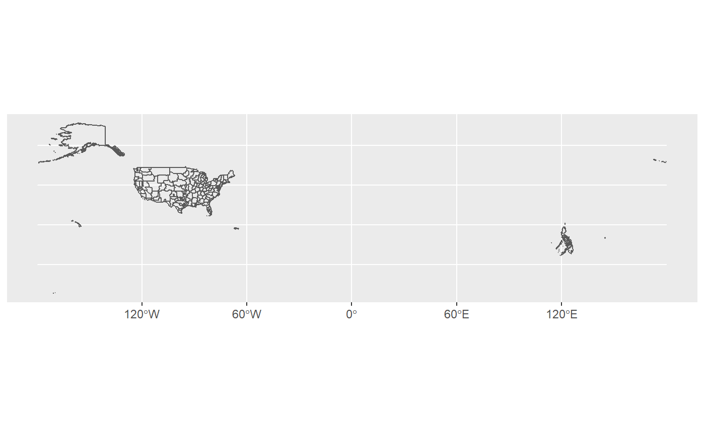
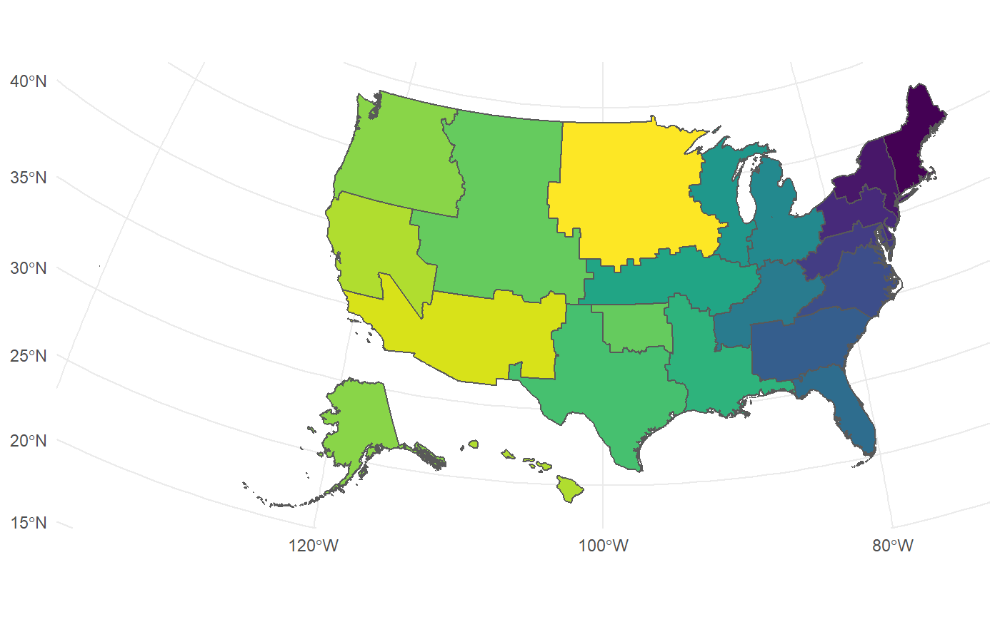
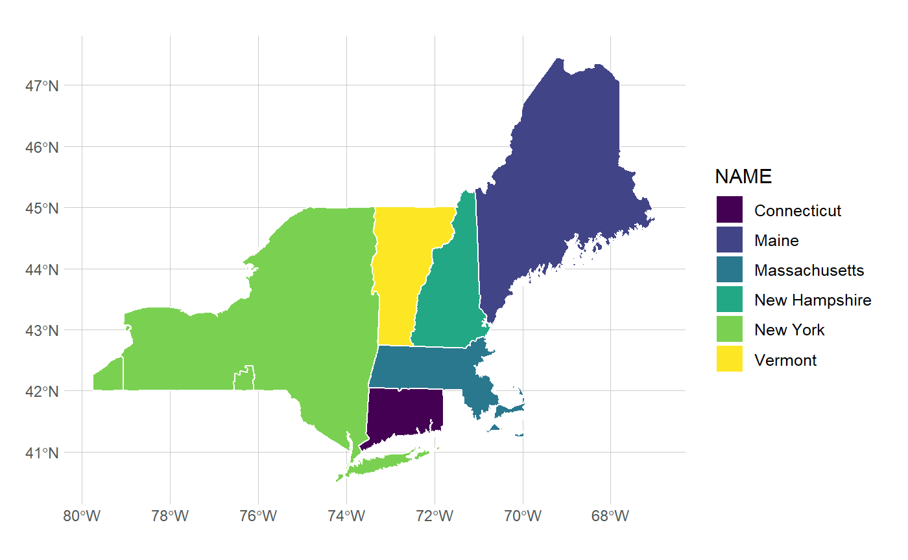
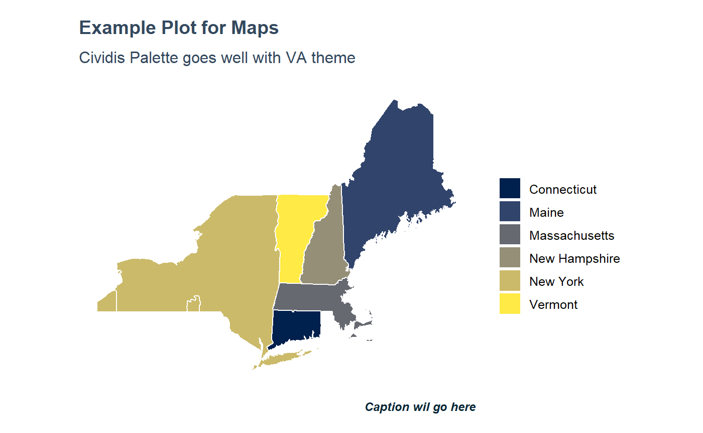

tidyVA includes simple features tibbles of VHA geographies.
For this example we’ll use the submarket dataset. This is a tidy dataframe that includes simple features geometry for VHA submarket regions. data.va.gov
data("submarket")
ggplot() + geom_sf(data=submarket, fill = NA)
Although accurate, this output is not very easy to work with. But, since this is now in tidy format, we can easily filter and manipulate the data. The function shift_geo() in tidyVA will project and repositon Alaska and Hawaii.
shift_geo(submarket) %>%
ggplot() + geom_sf(fill = NA) +
theme_minimal()
#> Please note: Alaska and Hawaii are being shifted and are not to scale.
If you create an R object, this object can be mapped multiple times as individual layers:
submarket <- shift_geo(submarket)
#> Please note: Alaska and Hawaii are being shifted and are not to scale.
ggplot() +
# layer 1 is mapped to represent VISNs
geom_sf(data = submarket, aes(fill = VISN), color = NA) +
# layer 2 is mapped to show all submarkets
geom_sf(data = submarket, fill = NA, color = "#ffffff", size = .5) +
theme_minimal() + theme(legend.position = "bottom") +
scale_fill_viridis_d()
Alternatively, you can aggregate this dataset to the VISN level, and use as needed. Keep in mind that VHA submarkets in the Caribbean and the Pacific Ocean, are not included - thus, VISNs 21 and 8 are not fully represented.
visn <- submarket %>% group_by(VISN) %>% summarise()
ggplot() + geom_sf(data = visn, aes(fill = VISN), show.legend = FALSE) +
theme_minimal() + scale_fill_viridis_d(option = "cividis")
Spatial intersection
A major limitation of the original data is that attributes were present based on a geography’s hierachy. The county dataset has VHA attributes in addition to State and County attributes. The visn dataset only has a VISN attribute:
data("states")
data("visn")
glimpse(visn)
#> Observations: 18
#> Variables: 4
#> $ VISN <chr> "01", "02", "04", "05", "06", "07", "08", "09", "10...
#> $ Shape_Leng <dbl> 133.20427, 80.95749, 48.00316, 97.94793, 166.43208,...
#> $ Shape_Area <dbl> 19.12818, 15.28981, 14.14237, 12.04503, 21.12288, 3...
#> $ geometry <MULTIPOLYGON [°]> MULTIPOLYGON (((-73.62286 4..., MULTI...With simple features we can easily perform geometric operations and gather attributes based on a spatial relationship:
visn_st <- st_intersection(states, visn)
#> although coordinates are longitude/latitude, st_intersection assumes that they are planar
glimpse(visn_st)
#> Observations: 151
#> Variables: 13
#> $ STATEFP <chr> "09", "50", "23", "25", "33", "36", "44", "09", "34...
#> $ STATENS <chr> "01779780", "01779802", "01779787", "00606926", "01...
#> $ AFFGEOID <chr> "0400000US09", "0400000US50", "0400000US23", "04000...
#> $ GEOID <chr> "09", "50", "23", "25", "33", "36", "44", "09", "34...
#> $ STUSPS <chr> "CT", "VT", "ME", "MA", "NH", "NY", "RI", "CT", "NJ...
#> $ NAME <chr> "Connecticut", "Vermont", "Maine", "Massachusetts",...
#> $ LSAD <chr> "00", "00", "00", "00", "00", "00", "00", "00", "00...
#> $ ALAND <dbl> 12542638347, 23873467535, 79885221885, 20204442852,...
#> $ AWATER <dbl> 1815476291, 1031124865, 11748755195, 7130620748, 10...
#> $ VISN <chr> "01", "01", "01", "01", "01", "01", "01", "02", "02...
#> $ Shape_Leng <dbl> 133.20427, 133.20427, 133.20427, 133.20427, 133.204...
#> $ Shape_Area <dbl> 19.12818, 19.12818, 19.12818, 19.12818, 19.12818, 1...
#> $ geometry <GEOMETRY [°]> MULTIPOLYGON (((-72.75991 4..., POLYGON (...We can now filter this dataframe by VISN and keep State attributes
visn_st %>% filter(VISN %in% c("01","02")) %>%
ggplot() + geom_sf(aes(fill = VISN), color = "#ffffff") +
scale_fill_viridis_d(option = "cividis") +
theme_minimal()
Or by State, and keeping VISN attributes. New York for example is mostly within VISN 2, but, there are small catchments areas in the Western and Southern parts of the state that are outside VISN 2.
Theme Function
tidyVA also includes a ggplot themes: theme_va().
This is theme has several possible parameters. The core of this function is theme_ipsum from hrbrthemes, but I have modified and set some defaults.
data("visn")
visn %>% ggplot(aes(reorder(VISN,Shape_Area), Shape_Area)) +
geom_col() + labs(x = "VISN", y = "Shape Area", caption = "CRS - EPSG:4326") +
ggtitle("Shape Area of VA Service Networks", subtitle = "This is an example plot") +
theme_va(grid = "X")
Map Theme
When plotting maps, you may want to remove the axis text from geom_sf(). For this, the map argument of theme_va() can be set to TRUE.
visn_st %>% filter(STUSPS %in% c("NY","CT","VT","ME", "MA","NH")) %>%
ggplot() + geom_sf(aes(fill = NAME)) +
scale_fill_viridis_d(option = "cividis") +
labs(caption = "Caption wil go here", fill = "") +
ggtitle("Example Plot for Maps",
subtitle = "Cividis Palette goes well with VA theme") +
theme_va(map = TRUE)